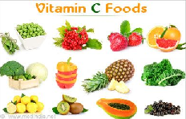
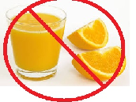

Fruit juice is not that different from sugary soft drinks. -they contain just as much sugar as sugary soft drinks like coca cola -there is no fiber in them and no chewing resistance, making it very easy to consume massive amounts of sugar
Vitamin C in foods such as oranges, lemon, kale and spinach helps your body heal if you get a cut.

Red meat, fish, chick peas, tofu, beans and lentils are some iron rich food.
October is National Pasta Month.
Each serving in chicken nuggets is 190 calories, 10 grams of protein, and 400 mg sodium.
Children are supposed to eat less than 2300 mg of sodium per day.
Gummy Bears are only 79 millimetres long in length.
Store bought 100% “real” orange juice is 100% artificially flavored. They remove the oxygen in the oranges to make preserve it( make it last)which removes the falvor of orange. They will put a lot of sugar and "flavor substitutes"to make it taste like orange again.

Aztecs used coco beans(what they make chocolate with) as money.
Humans are born craving sugar.
Fast food fries have 13-23 ingredients and most are chemicals.
A ripe cranberry will bounce like a ball.
No matter what color Froot Loop you eat, they all taste the same.
Ranch dressing has titanium dioxide which is also in sunscreen.
Ketchup was actually made to treat diarreah.
Honey is actually partly bee vomit(but dont worry it's delicious and still good for you).